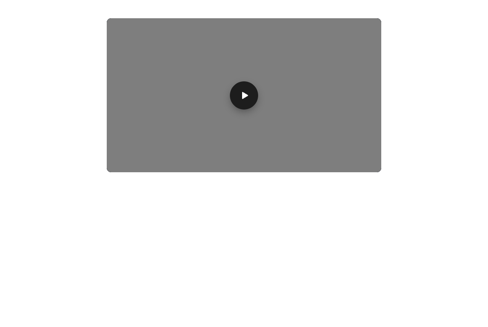
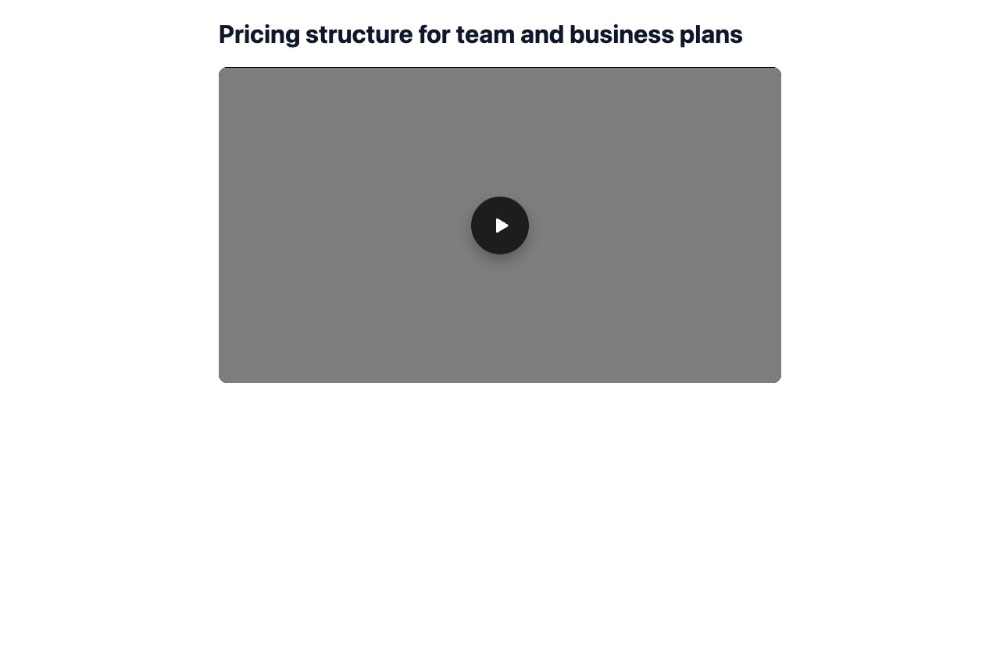
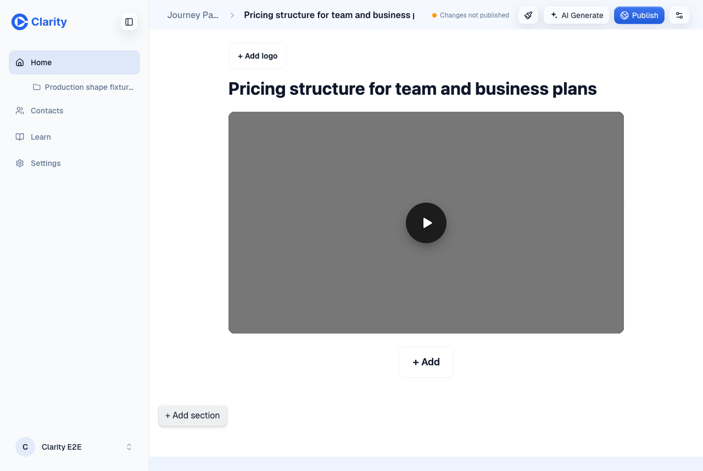

PR #1397, preview pr-1397, 2026-10-08. Screenshots are from the final commit 53ddd3b6; the table is the first batch on c99485fa, rerun on 53ddd3b6 with the same outcomes. Takes are synthetic sales scripts read by text-to-speech, plus Clarity's own internal test take.



| Take | Before | After | Why |
|---|---|---|---|
| Recording, pricing follow-up | Untitled Video | Pricing structure for team and business tiers | Titled, auto-trimmed |
| Recording, Clarity test take | Untitled Video | How to record educational presentations with slides | Titled, auto-trimmed |
| Recording, recruiting outreach (page saved early) | Untitled Video | Machine learning engineer role at Bright Line | Titled, page follows |
| Recording renamed by the rep at Stop | Jenna intro, take 2 | Jenna intro, take 2 | Person's name wins |
| Recording in Swedish | Untitled Video | Untitled Video | Not English, no model call |
| Recording with no speech | Untitled Video | Untitled Video | Mux found no speech, no job |
| Upload IMG_4825.MOV | IMG_4825 | Sales team onboarding process overview | Titled, not trimmed |
| Upload IMG_4829.MOV | IMG_4829 | How to fix two-factor authentication on a new phone | Titled, not trimmed |
| Upload IMG_4830.MOV (3-minute ramble) | IMG_4830 | Warehouse migration project update | Titled, not trimmed |
| Upload "Q3 analytics walkthrough.mp4" | Q3 analytics walkthrough | Q3 analytics walkthrough | A person's file name wins |
| Upload in German | IMG_4831 | IMG_4831 | Not English, no model call |
Also on the preview: four real-speech testimonial uploads, all titled and none trimmed. The "After" column is the first run on gemma. The model comparison later retitled the auto-titled takes twice (gpt-6-luna, then gemma again), so names on the preview today can differ, for example the early-save take now reads "Payments engineering manager recruitment outreach".
Finish to title: 47 to 81 seconds over the 12 takes titled in the first batch, median about 58. The early-save take, created separately, took 55 seconds, and an independent check on a new recording took 52. Almost all of it is Mux making the asset ready and Mux Robots transcribing. The title step after the words land took 0.8 to 2.7 seconds.
A public page cached before the title lands can keep the old render for up to 60 seconds, the existing page cache lifetime.
| Model | Titles | p50 / p95 call | Cost per 1,000 takes | Blind quality score |
|---|---|---|---|---|
| Workers AI gemma-4-26b-a4b (picked) | 13/13 eligible takes on the preview, 15/15 and 14/14 locally | 0.46 s / 2.1 s | about $0.04 | 48 / 65 |
| OpenAI gpt-6-luna via AI Gateway | 11/13, two empty on real speech | 2.3 s / 8.7 s | about $0.05 | 50 / 65 |
| Workers AI mistral-small-3.1-24b | 15/15, Title Case against the prompt | 0.53 s / 2.6 s | about $0.12 | not judged |
A blind judge scored the two finalists level overall: gpt-6-luna was a little more specific and won 7 of 13, gemma won 3, 3 tied. Gemma never came back empty, answers five times faster and keeps transcripts inside Cloudflare, so it is the route. Every call goes through the environment's AI Gateway, and each one leaves an ai_call point with the gateway id and its log id.